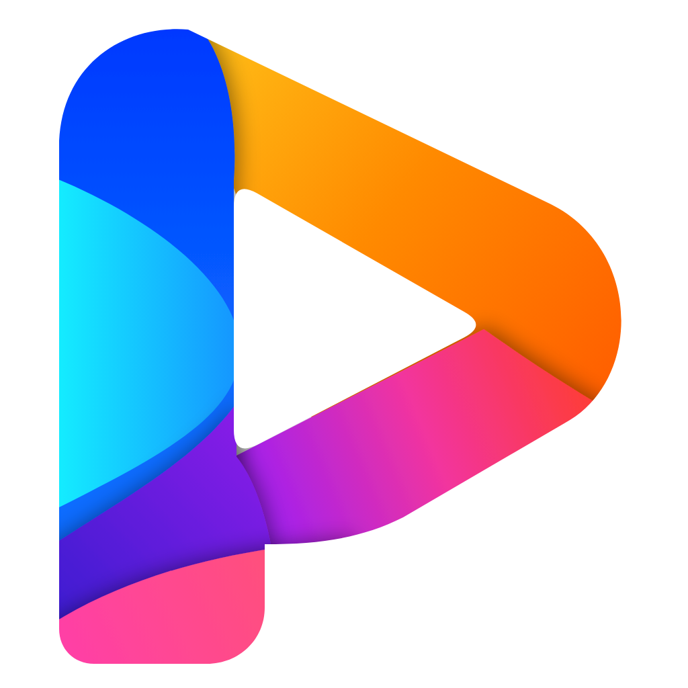
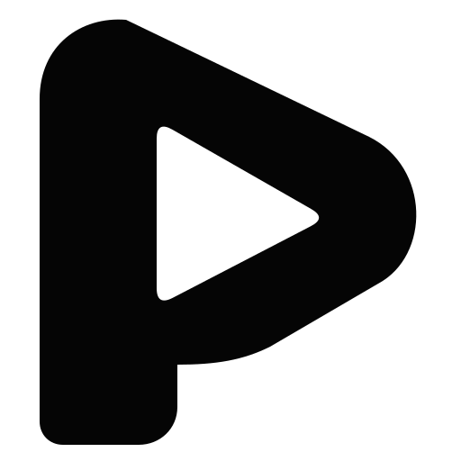
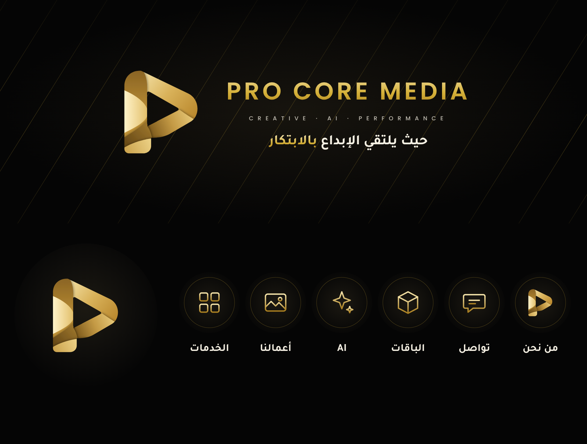

تُستخدم في: صورة البروفايل، الغلاف، المحتوى اليومي، عروض الوكالة، المحتوى التقني والـ AI. الخلفية دائمًا سوداء.
تُستخدم في: عروض القطاعات الفاخرة (العقار، المطاعم الراقية، الضيافة)، الباقات المميزة، المستندات الرسمية والفواتير.
القاعدة: لا يُدمج النظامان في تصميم واحد. الأسود هو القاسم المشترك. ألوان الشعار الملوّن: #14C8FF · #2F6BFF · #8B1FE8 · #F2349E · #FF8A00.
أن تكون Pro Core Media الوكالة الرقمية المرجعية في المنطقة الشرقية للعلامات التي تريد إبداعًا بمستوى عالمي، يُنتَج بسرعة الذكاء الاصطناعي، ويُقاس بالأرقام.
نساعد الشركات السعودية على النمو عبر محتوى وإعلانات تجمع بين الفكرة الإبداعية، وأدوات الذكاء الاصطناعي، وقرارات مبنية على البيانات — بشفافية كاملة.
إبداع بمستوى فاخر، بسرعة الذكاء الاصطناعي، ونتائج تُقاس.
واثقة · فاخرة · مبتكرة · عملية ومبنية على البيانات · قريبة من السوق السعودي

الأساسي: الذهبي المعدني على الأسود
أحادي: الأسود على الخلفيات الفاتحة
أحادي: الأسود على الذهبي
النسبة المقترحة: 70% أسود/أونكس · 20% عاجي · 10% ذهبي. الذهبي للتأكيد فقط، لا للنصوص الطويلة. لون مساعد اختياري للمحتوى التقني (AI): أزرق كهربائي #3A7BFF بنسبة لا تتجاوز 5%.
الخطان مجانيان ومرخصان للاستخدام التجاري (SIL Open Font License) ومتوفران في Canva وGoogle Fonts.
